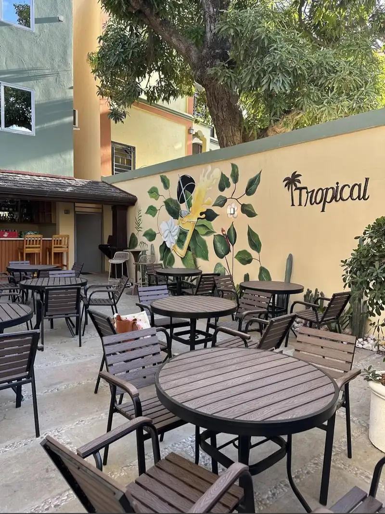
Resto-bar · Vaudreuil
Un coin de tropiques,
à Vaudreuil.
Cuisine haïtienne et internationale, cocktails maison et une terrasse ombragée où poser ses valises le temps d'un repas.
Une terrasse pensée pour prendre son temps
Arbres, murs peints à la main, coin bar — le Tropical est ouvert depuis un an au cœur de Vaudreuil.
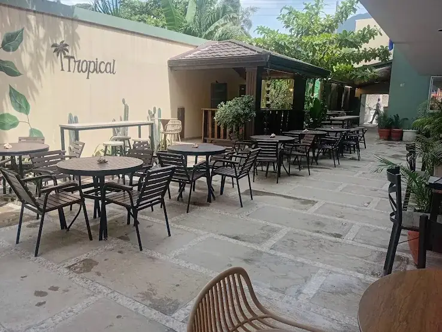
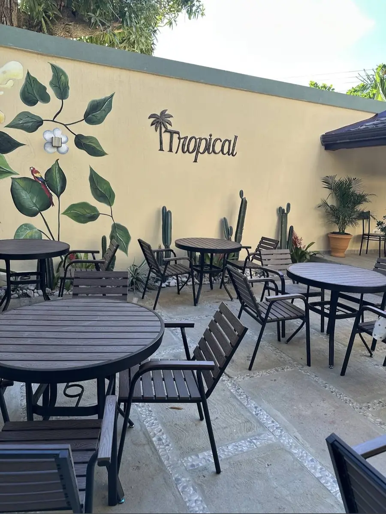
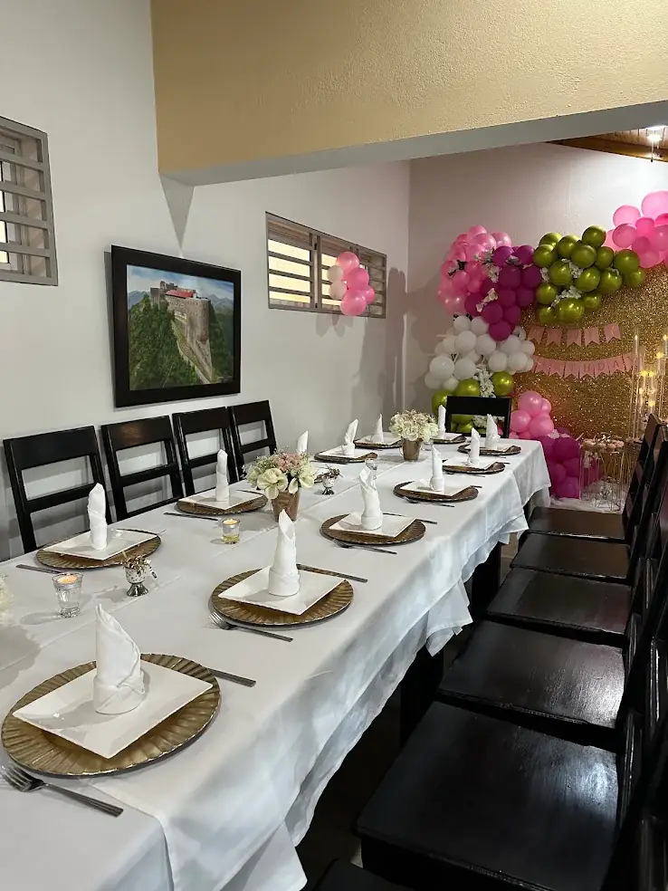
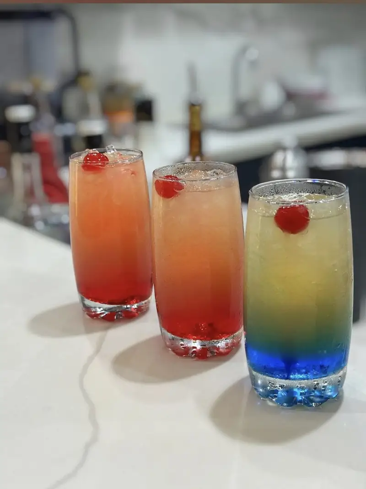
Quelques plats et boissons
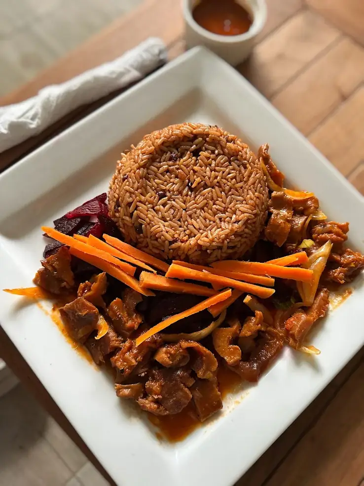
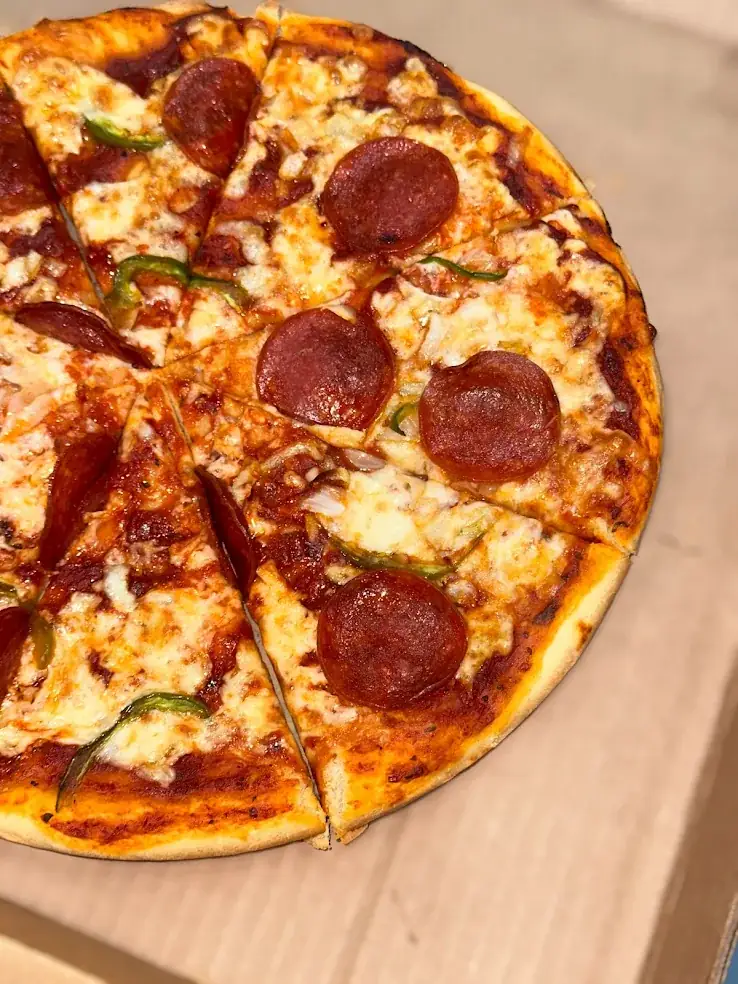
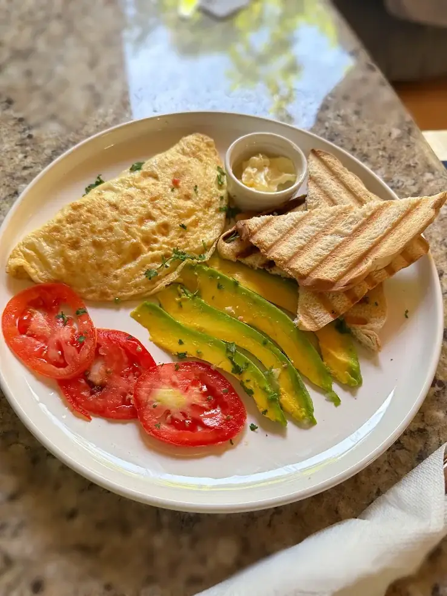
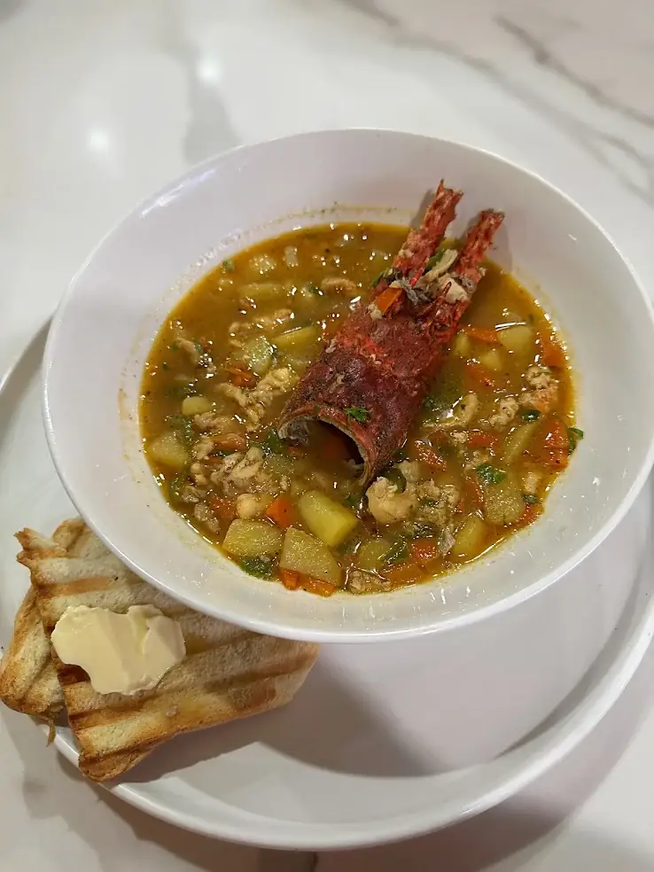
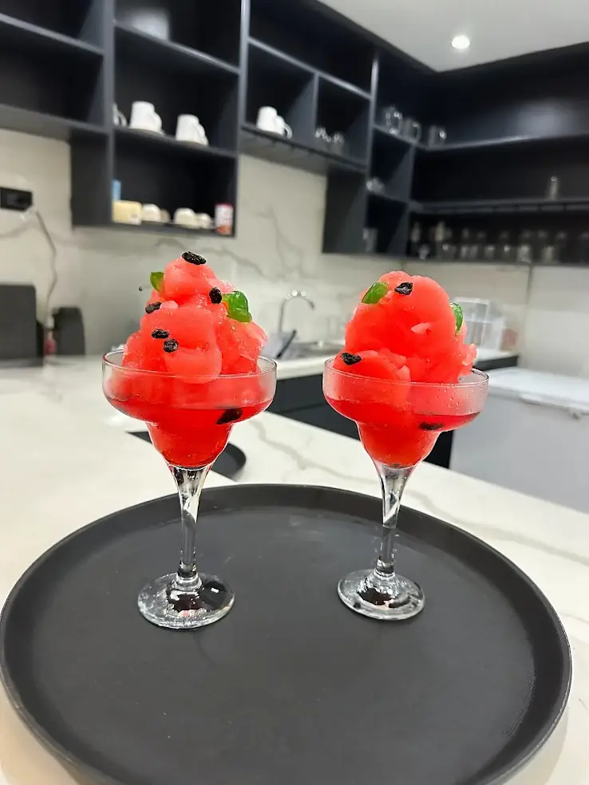
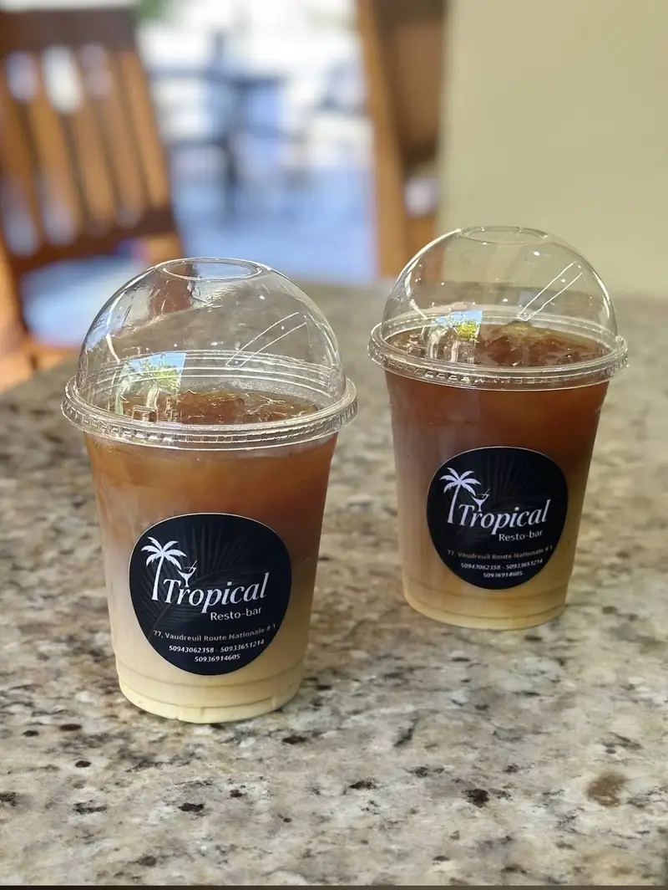
Nous trouver
Horaires
Lun, Mer, Jeu, Ven, Sam : 8h30 – 22h00
Dimanche : 15h00 – 22h00
Mardi : fermé
Suivez-nous
Événements, soirées à thème et actualités du Tropical.
Réserver
Une table pour un repas, ou tout l'espace pour un anniversaire, un baptême, une fête ? Écrivez-nous.
Les réservations en ligne sont momentanément fermées.
Vous pouvez nous joindre directement par téléphone ou WhatsApp au +509 44 68 4449.